pacman::p_load(sf, tidyverse, spatstat, tmap, terra)Geospatial Analytics for Public Safety
Take-home Exercise 1: Forest-Fire Events in Ketapang Regency, West Kalimantan
Introduction and Study Context
Research Question and Objectives
Research Question: Where are forest-fire events concentrated within Ketapang Regency, and how does their spatial distribution and interaction change across the observed 2026 period (particularly as the dry season progresses)?
Data and Study Design
Study area: Ketapang Regency, West Kalimantan, Indonesia.
Core datasets:
- Forest-fire event data: NASA FIRMS, VIIRS S-NPP (SV-C2) and VIIRS NOAA-20 (J1V-C2), bounding box
109.8, -3.2, 111.3, 0.0, observation period 1 Jan 2026 – 12 Sept 2026, Shapefile format. - Administrative boundary data: indonesia-geospasial.com, “Batas Administrasi Kabupaten/Kota Tahun 2019” (Indonesia regency boundaries), filtered to Ketapang Regency.
Data Preparation and Quality Assessment
Data Import
fire_archive_sv <- st_read(“data/geospatial/DL_FIRE_SV-C2_804529/fire_archive_SV-C2_804529.shp”)
fire_nrt_sv <- st_read(“data/geospatial/DL_FIRE_SV-C2_804529/fire_nrt_SV-C2_804529.shp”)
fire_archive_sv <- st_read("data/geospatial/DL_FIRE_SV-C2_804529/fire_archive_SV-C2_804529.shp")Reading layer `fire_archive_SV-C2_804529' from data source
`D:\1.Abinav\1.SMU\Term 4\Geospatial Analysis\Abinav0905\GAA-Abinav-Test\Take_Home_Ex\Take_HomeEx01\data\geospatial\DL_FIRE_SV-C2_804529\fire_archive_SV-C2_804529.shp'
using driver `ESRI Shapefile'
Simple feature collection with 956 features and 15 fields
Geometry type: POINT
Dimension: XY
Bounding box: xmin: 109.8232 ymin: -3.06372 xmax: 111.2793 ymax: -0.00421
Geodetic CRS: WGS 84fire_nrt_sv <- st_read("data/geospatial/DL_FIRE_SV-C2_804529/fire_nrt_SV-C2_804529.shp")Reading layer `fire_nrt_SV-C2_804529' from data source
`D:\1.Abinav\1.SMU\Term 4\Geospatial Analysis\Abinav0905\GAA-Abinav-Test\Take_Home_Ex\Take_HomeEx01\data\geospatial\DL_FIRE_SV-C2_804529\fire_nrt_SV-C2_804529.shp'
using driver `ESRI Shapefile'
Simple feature collection with 37001 features and 14 fields
Geometry type: POINT
Dimension: XY
Bounding box: xmin: 109.8001 ymin: -3.06278 xmax: 111.3 ymax: -0.00033
Geodetic CRS: WGS 84fire_archive_j1v <- st_read("data/geospatial/DL_FIRE_J1V-C2_804528/fire_archive_J1V-C2_804528.shp")Reading layer `fire_archive_J1V-C2_804528' from data source
`D:\1.Abinav\1.SMU\Term 4\Geospatial Analysis\Abinav0905\GAA-Abinav-Test\Take_Home_Ex\Take_HomeEx01\data\geospatial\DL_FIRE_J1V-C2_804528\fire_archive_J1V-C2_804528.shp'
using driver `ESRI Shapefile'
Simple feature collection with 962 features and 15 fields
Geometry type: POINT
Dimension: XY
Bounding box: xmin: 109.8 ymin: -3.05831 xmax: 111.2959 ymax: -0.01124
Geodetic CRS: WGS 84fire_nrt_j1v <- st_read("data/geospatial/DL_FIRE_J1V-C2_804528/fire_nrt_J1V-C2_804528.shp")Reading layer `fire_nrt_J1V-C2_804528' from data source
`D:\1.Abinav\1.SMU\Term 4\Geospatial Analysis\Abinav0905\GAA-Abinav-Test\Take_Home_Ex\Take_HomeEx01\data\geospatial\DL_FIRE_J1V-C2_804528\fire_nrt_J1V-C2_804528.shp'
using driver `ESRI Shapefile'
Simple feature collection with 37443 features and 14 fields
Geometry type: POINT
Dimension: XY
Bounding box: xmin: 109.8003 ymin: -3.06254 xmax: 111.2997 ymax: -0.00099
Geodetic CRS: WGS 84boundary_id <- st_read("data/geospatial/BATAS KABUPATEN KOTA DESEMBER 2019 DUKCAPIL/BATAS KABUPATEN KOTA DESEMBER 2019 DUKCAPIL.shp")Reading layer `BATAS KABUPATEN KOTA DESEMBER 2019 DUKCAPIL' from data source
`D:\1.Abinav\1.SMU\Term 4\Geospatial Analysis\Abinav0905\GAA-Abinav-Test\Take_Home_Ex\Take_HomeEx01\data\geospatial\BATAS KABUPATEN KOTA DESEMBER 2019 DUKCAPIL\BATAS KABUPATEN KOTA DESEMBER 2019 DUKCAPIL.shp'
using driver `ESRI Shapefile'
Simple feature collection with 515 features and 1 field
Geometry type: MULTIPOLYGON
Dimension: XY
Bounding box: xmin: 95.00971 ymin: -11.00762 xmax: 141.0194 ymax: 6.07694
Geodetic CRS: WGS 84names(boundary_id)[1] "KAB_KOTA" "geometry"names(fire_archive_sv) [1] "LATITUDE" "LONGITUDE" "BRIGHTNESS" "SCAN" "TRACK"
[6] "ACQ_DATE" "ACQ_TIME" "SATELLITE" "INSTRUMENT" "CONFIDENCE"
[11] "VERSION" "BRIGHT_T31" "FRP" "DAYNIGHT" "TYPE"
[16] "geometry" names(fire_nrt_sv) [1] "LATITUDE" "LONGITUDE" "BRIGHTNESS" "SCAN" "TRACK"
[6] "ACQ_DATE" "ACQ_TIME" "SATELLITE" "INSTRUMENT" "CONFIDENCE"
[11] "VERSION" "BRIGHT_T31" "FRP" "DAYNIGHT" "geometry" boundary_id$KAB_KOTA[grepl("ketapang", boundary_id$KAB_KOTA, ignore.case = TRUE)][1] "KETAPANG"# Add source tags before combining, since we're losing archive/nrt
# and satellite distinction once merged (relevant for data-quality discussion)
fire_archive_sv <- fire_archive_sv %>% mutate(source = "archive", satellite = "SV")
fire_nrt_sv <- fire_nrt_sv %>% mutate(source = "nrt", satellite = "SV", TYPE = NA)
fire_archive_j1v <- fire_archive_j1v %>% mutate(source = "archive", satellite = "J1V")
fire_nrt_j1v <- fire_nrt_j1v %>% mutate(source = "nrt", satellite = "J1V", TYPE = NA)
# Combine all four into one fire event dataset
fire_all <- bind_rows(fire_archive_sv, fire_nrt_sv, fire_archive_j1v, fire_nrt_j1v)
nrow(fire_all)[1] 76362names(fire_all) [1] "LATITUDE" "LONGITUDE" "BRIGHTNESS" "SCAN" "TRACK"
[6] "ACQ_DATE" "ACQ_TIME" "SATELLITE" "INSTRUMENT" "CONFIDENCE"
[11] "VERSION" "BRIGHT_T31" "FRP" "DAYNIGHT" "TYPE"
[16] "source" "satellite" "geometry" summary(fire_all$ACQ_DATE) Min. 1st Qu. Median Mean 3rd Qu. Max.
"2026-01-12" "2026-08-16" "2026-08-26" "2026-08-18" "2026-09-01" "2026-09-11" # Filter boundary to Ketapang Regency only
ketapang_boundary <- boundary_id %>%
filter(KAB_KOTA == "KETAPANG")
# Transform to projected CRS (UTM Zone 49S) - needed for accurate distance-based
# analysis later (spatstat requires planar coordinates, not lat/long degrees)
ketapang_boundary <- st_transform(ketapang_boundary, crs = 32749)
st_geometry_type(ketapang_boundary)[1] MULTIPOLYGON
18 Levels: GEOMETRY POINT LINESTRING POLYGON MULTIPOINT ... TRIANGLEst_crs(ketapang_boundary)$epsg[1] 32749st_area(ketapang_boundary)29713265008 [m^2]# Convert ACQ_DATE from character to proper Date type
fire_all <- fire_all %>%
mutate(ACQ_DATE = as.Date(ACQ_DATE))
# Reproject fire points to match boundary CRS (UTM Zone 49S)
fire_all <- st_transform(fire_all, crs = 32749)
# Spatially filter to points falling within Ketapang boundary
fire_ketapang <- st_filter(fire_all, ketapang_boundary)
nrow(fire_ketapang)[1] 54008class(fire_all$ACQ_DATE)[1] "Date"range(fire_ketapang$ACQ_DATE)[1] "2026-01-12" "2026-09-11"# Check for duplicate observations (same lat/long/date/time)
n_duplicates <- fire_ketapang %>%
st_drop_geometry() %>%
duplicated() %>%
sum()
# Check for missing/invalid geometries
n_empty_geom <- sum(st_is_empty(fire_ketapang))
# Check CONFIDENCE field - VIIRS uses categorical low/nominal/high
table(fire_ketapang$CONFIDENCE, useNA = "always")
h l n <NA>
2057 2803 49148 0 # Check for any NA coordinates (shouldn't happen post-import, but verify)
n_na_coords <- sum(is.na(st_coordinates(fire_ketapang)))
n_duplicates[1] 0n_empty_geom[1] 0n_na_coords[1] 0fire_ketapang_clean <- fire_ketapang %>%
filter(CONFIDENCE != "l")
nrow(fire_ketapang_clean)[1] 51205table(fire_ketapang_clean$CONFIDENCE, useNA = "always")
h n <NA>
2057 49148 0 Analytical Assumptions and Methodological Decisions
First-Order Spatial Point Pattern Analysis
Preparing the Point Pattern Object
# Convert Ketapang boundary to an owin (observation window) for spatstat
ketapang_owin <- as.owin(ketapang_boundary)
# Extract coordinates from the cleaned fire points
fire_coords <- st_coordinates(fire_ketapang_clean)
# Create the ppp (planar point pattern) object
fire_ppp <- ppp(x = fire_coords[,1],
y = fire_coords[,2],
window = ketapang_owin)
# Targeted checks instead of full summary()
n_dupes_ppp <- sum(duplicated(fire_ppp))
n_points_final <- fire_ppp$n
n_points_original <- nrow(fire_coords)
cat("Points in ppp object:", n_points_final, "\n")Points in ppp object: 51205 cat("Points before conversion:", n_points_original, "\n")Points before conversion: 51205 cat("Points dropped (outside window):", n_points_original - n_points_final, "\n")Points dropped (outside window): 0 cat("Duplicated coordinate pairs:", n_dupes_ppp, "\n")Duplicated coordinate pairs: 0 Kernel Density Estimation
# Kernel density estimation using diggle bandwidth selection method
# (data-driven, avoids arbitrarily picking a bandwidth)
kde_fire <- density(fire_ppp, sigma = bw.diggle, edge = TRUE)
plot(kde_fire, main = "Kernel Density Estimate of Fire Events in Ketapang")
plot(ketapang_boundary$geometry, add = TRUE, border = "white")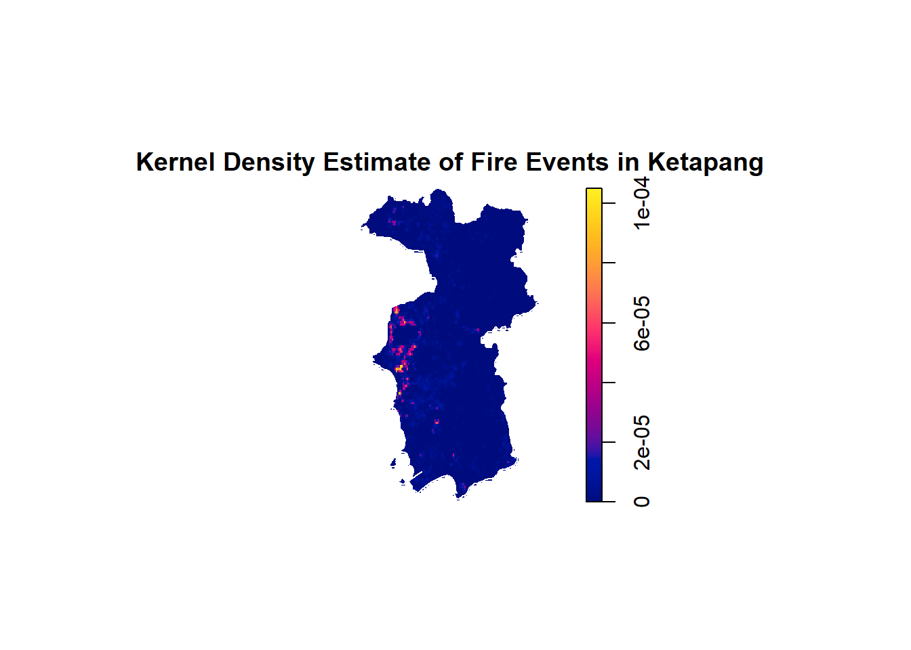
bw.diggle(fire_ppp) sigma
239.3678 bw_diggle <- bw.diggle(fire_ppp)
bw_ppl <- bw.ppl(fire_ppp)
bw_scott <- bw.scott(fire_ppp)
cat("Diggle:", bw_diggle, "\n")Diggle: 239.3678 cat("PPL:", bw_ppl, "\n")PPL: 276.5561 cat("Scott (x):", bw_scott[1], "\n")Scott (x): 4486.392 cat("Scott (y):", bw_scott[2], "\n")Scott (y): 10208.7 # Primary KDE using Diggle's bandwidth (data-driven, suited to clustered patterns)
kde_diggle <- density(fire_ppp, sigma = bw_diggle, edge = TRUE)
# Robustness check: KDE using Scott's rule (much larger bandwidth)
kde_scott <- density(fire_ppp, sigma = bw_scott, edge = TRUE)
par(mfrow = c(1,2))
plot(kde_diggle, main = "KDE (Diggle bandwidth)")
plot(ketapang_boundary$geometry, add = TRUE, border = "white")
plot(kde_scott, main = "KDE (Scott bandwidth)")
plot(ketapang_boundary$geometry, add = TRUE, border = "white")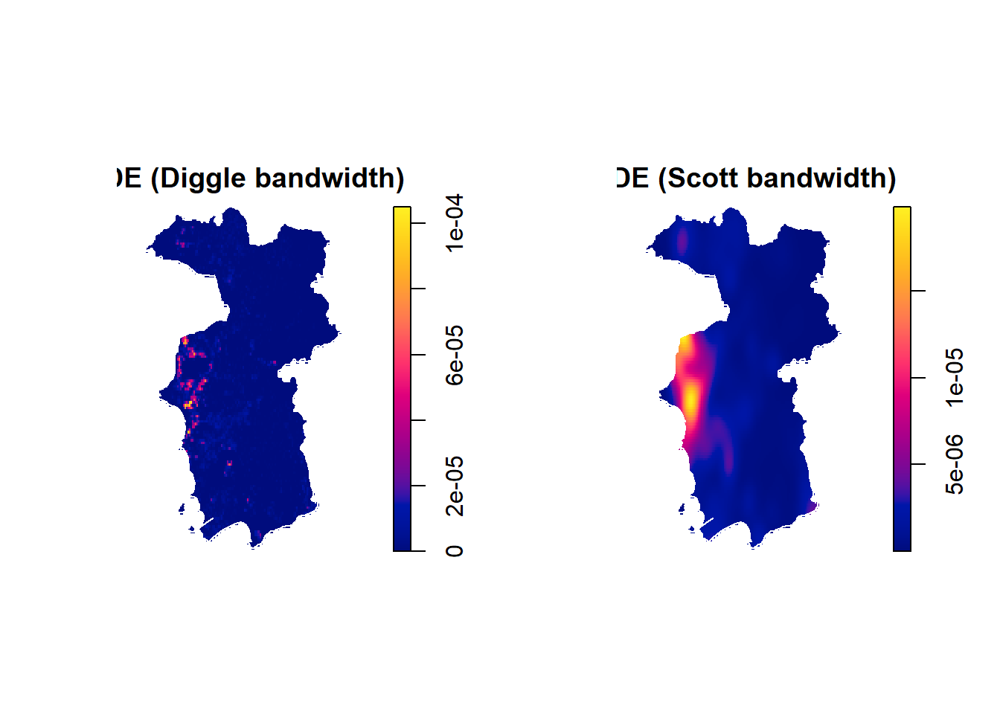
par(mfrow = c(1,1))Temporal Variation in Fire Intensity (Phase-Based)
# Define fire phase based on documented 2026 Kalimantan wildfire escalation timeline
fire_ketapang_clean <- fire_ketapang_clean %>%
mutate(phase = case_when(
ACQ_DATE < as.Date("2026-07-01") ~ "Pre-escalation (Jan-Jun)",
ACQ_DATE < as.Date("2026-08-01") ~ "Onset (Jul)",
TRUE ~ "Crisis (Aug-Sep)"
),
phase = factor(phase, levels = c("Pre-escalation (Jan-Jun)", "Onset (Jul)", "Crisis (Aug-Sep)")))
table(fire_ketapang_clean$phase)
Pre-escalation (Jan-Jun) Onset (Jul) Crisis (Aug-Sep)
1667 1857 47681 # Split ppp object by phase (factor levels set in phase-kde-prep control order)
fire_ppp_phase <- fire_ppp
marks(fire_ppp_phase) <- fire_ketapang_clean$phase
fire_split_phase <- split(fire_ppp_phase)
# KDE per phase, same bandwidth (bw_diggle) for comparability across panels
kde_phase <- lapply(fire_split_phase, function(p) density(p, sigma = bw_diggle, edge = TRUE))
par(mfrow = c(1,3), mar = c(1,1,2,1))
for (ph in names(kde_phase)) {
plot(kde_phase[[ph]], main = ph)
plot(ketapang_boundary$geometry, add = TRUE, border = "white")
}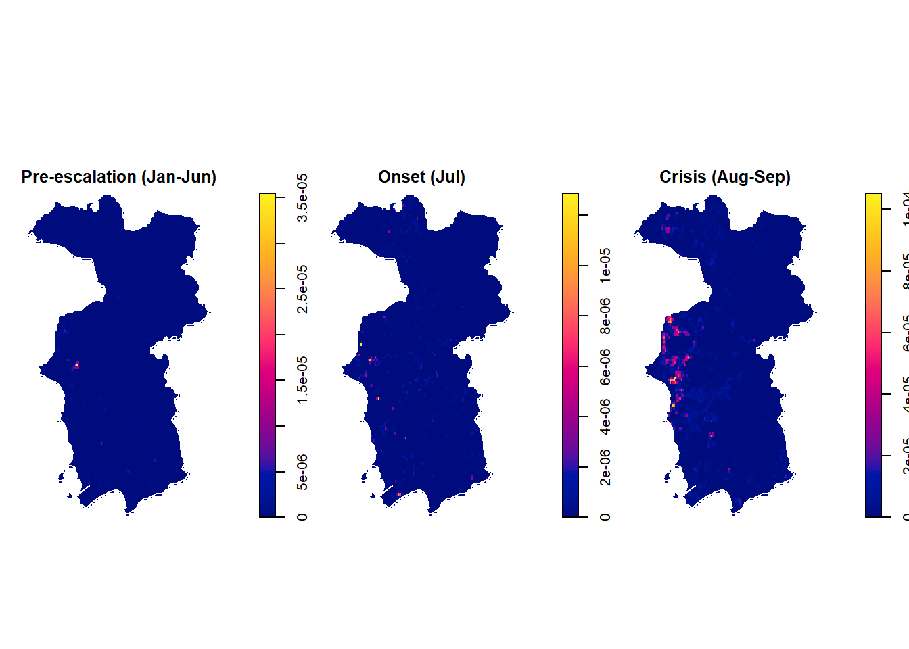
par(mfrow = c(1,1))# Quadrat count test for Complete Spatial Randomness (CSR)
# Using a 5x5 grid - fine enough to detect structure, coarse enough for stable counts
qcount <- quadratcount(fire_ppp, nx = 5, ny = 5)
qtest <- quadrat.test(fire_ppp, nx = 5, ny = 5)
qtest
Chi-squared test of CSR using quadrat counts
data: fire_ppp
X2 = 98309, df = 24, p-value < 2.2e-16
alternative hypothesis: two.sided
Quadrats: 25 tiles (irregular windows)Second-Order Spatial Point Pattern Analysis
Nearest-Neighbour Distance Functions (G and F)
set.seed(1234)
g_fire <- Gest(fire_ppp)
plot(g_fire, main = "G-function: Observed Nearest-Neighbour Distances")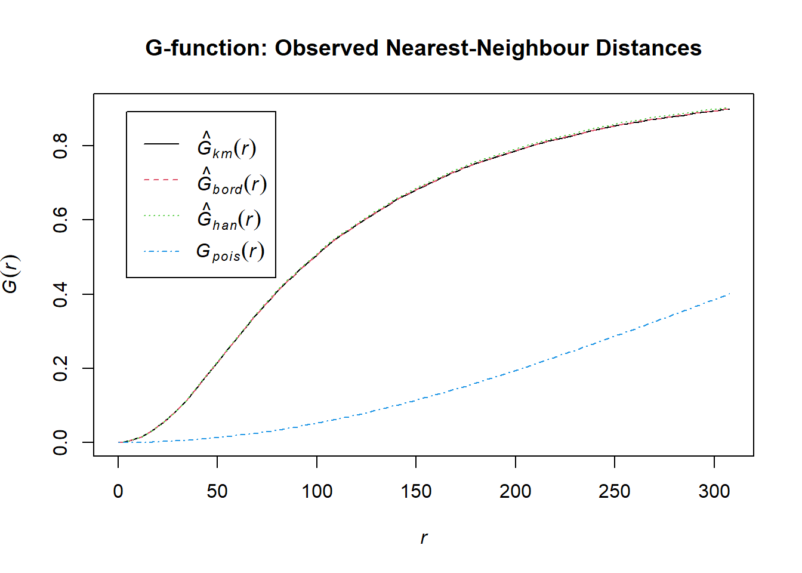
set.seed(1234)
f_fire <- Fest(fire_ppp)
plot(f_fire, main = "F-function: Observed Empty Space Distances")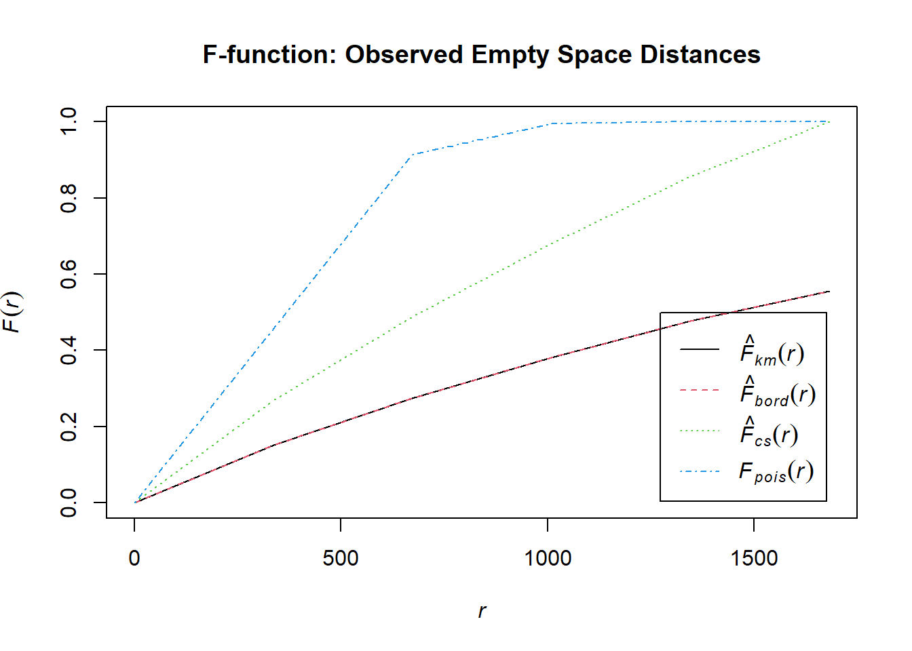
set.seed(1234)
g_envelope <- envelope(fire_ppp, Gest, nsim = 99, rank = 1)Generating 99 simulated realisations of CSR ...
1, 2, [6:51 remaining] 3,
[6:36 remaining] 4, [6:35 remaining] 5, [6:11 remaining] 6,
[6:08 remaining] 7, [6:08 remaining] 8, [6:09 remaining] 9,
[6:08 remaining] 10, [6:09 remaining] 11, [6:06 remaining] 12,
[6:03 remaining] 13, [5:59 remaining] 14, [5:56 remaining] 15,
[5:53 remaining] 16, [5:53 remaining] 17, [5:49 remaining] 18,
[5:44 remaining] 19, [5:40 remaining] 20, [5:36 remaining] 21,
[5:32 remaining] 22, [5:28 remaining] 23, [5:24 remaining] 24,
[5:22 remaining] 25, [5:18 remaining] 26, [5:14 remaining] 27,
[5:09 remaining] 28, [5:05 remaining] 29, [5:01 remaining] 30,
[4:55 remaining] 31, [4:51 remaining] 32, [4:47 remaining] 33,
[4:44 remaining] 34, [4:39 remaining] 35, [4:35 remaining] 36,
[4:31 remaining] 37, [4:26 remaining] 38, [4:22 remaining] 39,
[4:18 remaining] 40, [4:14 remaining] 41, [4:10 remaining] 42,
[4:06 remaining] 43, [4:01 remaining] 44, [3:57 remaining] 45,
[3:53 remaining] 46, [3:49 remaining] 47, [3:44 remaining] 48,
[3:40 remaining] 49, [3:36 remaining] 50, [3:32 remaining] 51,
[3:27 remaining] 52, [3:23 remaining] 53, [3:19 remaining] 54,
[3:15 remaining] 55, [3:10 remaining] 56, [3:06 remaining] 57,
[3:02 remaining] 58, [2:58 remaining] 59, [2:53 remaining] 60,
[2:49 remaining] 61, [2:45 remaining] 62, [2:40 remaining] 63,
[2:36 remaining] 64, [2:32 remaining] 65, [2:27 remaining] 66,
[2:23 remaining] 67, [2:19 remaining] 68, [2:14 remaining] 69,
[2:10 remaining] 70, [2:06 remaining] 71, [2:01 remaining] 72,
[1:56 remaining] 73, [1:52 remaining] 74, [1:48 remaining] 75,
[1:43 remaining] 76, [1:39 remaining] 77, [1:35 remaining] 78,
[1:30 remaining] 79, [1:26 remaining] 80, [1:22 remaining] 81,
[1:18 remaining] 82, [1:13 remaining] 83, [1:09 remaining] 84,
[1:05 remaining] 85, [1:00 remaining] 86, [56 sec remaining] 87,
[52 sec remaining] 88, [47 sec remaining] 89, [43 sec remaining] 90,
[39 sec remaining] 91, [35 sec remaining] 92, [30 sec remaining] 93,
[26 sec remaining] 94, [22 sec remaining] 95, [17 sec remaining] 96,
[13 sec remaining] 97, [9 sec remaining] 98, [4 sec remaining]
99.
Done.plot(g_envelope, main = "G-function with CSR Envelope (99 simulations)")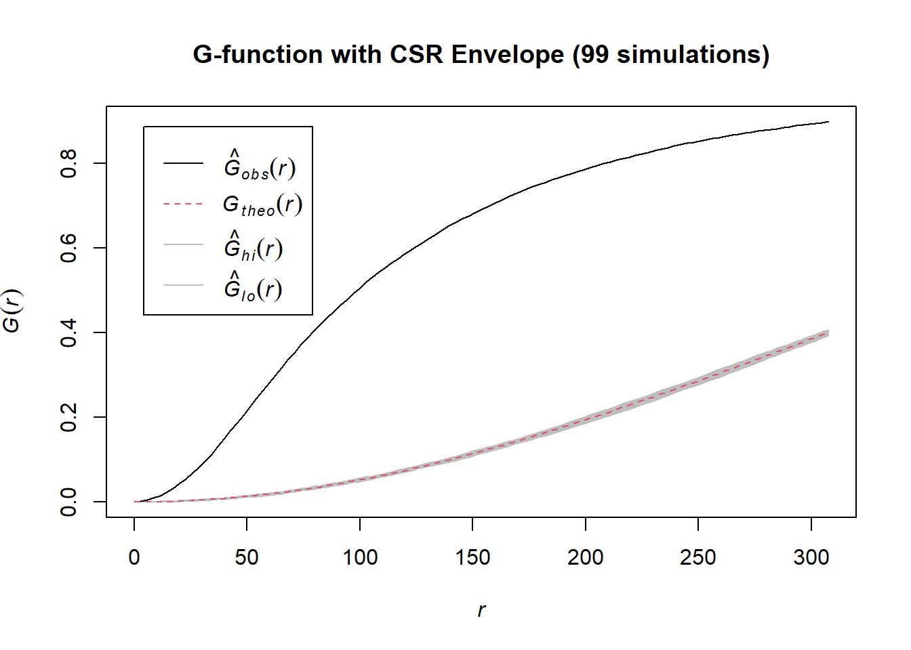
set.seed(1234)
f_envelope <- envelope(fire_ppp, Fest, nsim = 99, rank = 1)Generating 99 simulated realisations of CSR ...
1, 2, 3, 4, 5, 6, 7, 8, 9, 10, 11, 12, 13, 14, 15, 16, 17, 18, 19, 20,
21, 22, 23, 24, 25, 26, 27, 28, 29, 30, 31, 32, 33, 34, 35, 36, 37, 38, 39, 40,
41, 42, 43, 44, 45, 46, 47, 48, 49, 50, 51, 52, 53, 54, 55, 56, 57, 58, 59, 60,
61, 62, 63, 64, 65, 66, 67, 68, 69, 70, 71, 72, 73, 74, 75, 76, 77, 78, 79, 80,
81, 82, 83, 84, 85, 86, 87, 88, 89, 90, 91, 92, 93, 94, 95, 96, 97, 98,
99.
Done.plot(f_envelope, main = "F-function with CSR Envelope (99 simulations)")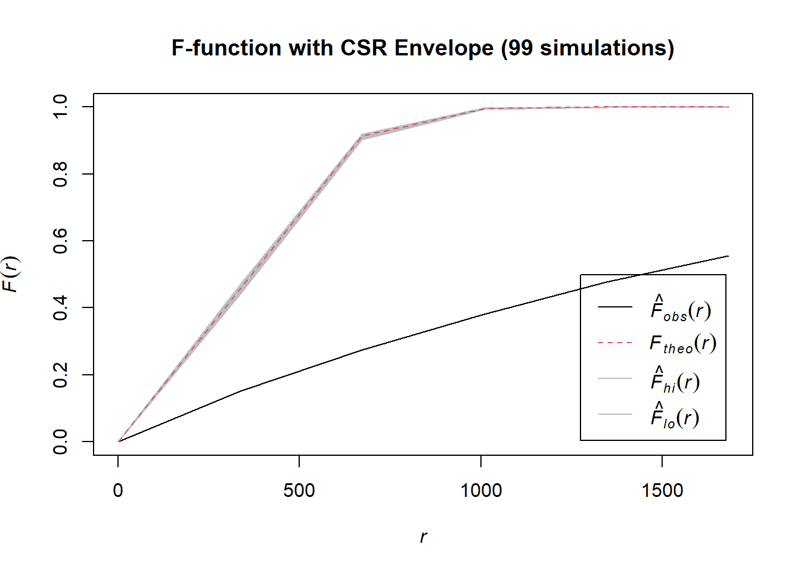
Second-Order Interaction (K and L Functions)
set.seed(1234)
k_fire <- Kest(fire_ppp, rmax = 5000, correction = "border")
plot(k_fire, main = "K-function: Observed (rmax = 5km)")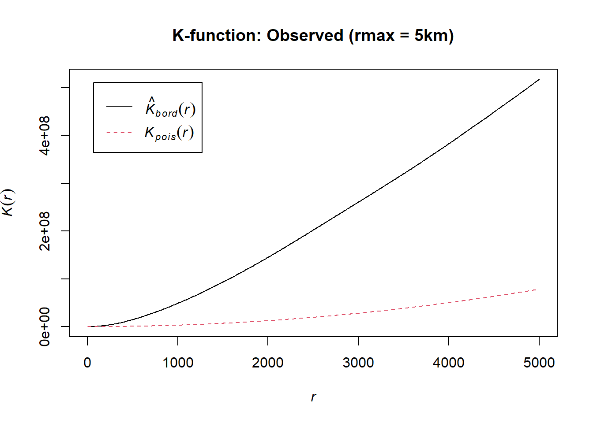
set.seed(1234)
k_envelope <- envelope(fire_ppp, Kest, rmax = 5000, correction = "border", nsim = 99, rank = 1)Generating 99 simulated realisations of CSR ...
1, 2, [6:28 remaining] 3,
[6:36 remaining] 4, [6:39 remaining] 5, [6:38 remaining] 6,
[6:51 remaining] 7, [6:45 remaining] 8, [6:40 remaining] 9,
[6:35 remaining] 10, [6:30 remaining] 11, [6:25 remaining] 12,
[6:19 remaining] 13, [6:15 remaining] 14, [6:11 remaining] 15,
[6:05 remaining] 16, [6:04 remaining] 17, [5:58 remaining] 18,
[5:54 remaining] 19, [5:49 remaining] 20, [5:45 remaining] 21,
[5:41 remaining] 22, [5:36 remaining] 23, [5:32 remaining] 24,
[5:29 remaining] 25, [5:22 remaining] 26, [5:17 remaining] 27,
[5:13 remaining] 28, [5:08 remaining] 29, [5:03 remaining] 30,
[4:59 remaining] 31, [4:54 remaining] 32, [4:49 remaining] 33,
[4:46 remaining] 34, [4:41 remaining] 35, [4:36 remaining] 36,
[4:32 remaining] 37, [4:28 remaining] 38, [4:23 remaining] 39,
[4:19 remaining] 40, [4:15 remaining] 41, [4:11 remaining] 42,
[4:07 remaining] 43, [4:03 remaining] 44, [3:59 remaining] 45,
[3:55 remaining] 46, [3:51 remaining] 47, [3:47 remaining] 48,
[3:43 remaining] 49, [3:39 remaining] 50, [3:36 remaining] 51,
[3:32 remaining] 52, [3:28 remaining] 53, [3:24 remaining] 54,
[3:20 remaining] 55, [3:15 remaining] 56, [3:11 remaining] 57,
[3:07 remaining] 58, [3:02 remaining] 59, [2:58 remaining] 60,
[2:54 remaining] 61, [2:49 remaining] 62, [2:45 remaining] 63,
[2:41 remaining] 64, [2:36 remaining] 65, [2:32 remaining] 66,
[2:28 remaining] 67, [2:23 remaining] 68, [2:19 remaining] 69,
[2:15 remaining] 70, [2:10 remaining] 71, [2:06 remaining] 72,
[2:01 remaining] 73, [1:57 remaining] 74, [1:52 remaining] 75,
[1:48 remaining] 76, [1:44 remaining] 77, [1:39 remaining] 78,
[1:35 remaining] 79, [1:30 remaining] 80, [1:26 remaining] 81,
[1:21 remaining] 82, [1:17 remaining] 83, [1:12 remaining] 84,
[1:08 remaining] 85, [1:03 remaining] 86, [59 sec remaining] 87,
[54 sec remaining] 88, [50 sec remaining] 89, [45 sec remaining] 90,
[41 sec remaining] 91, [36 sec remaining] 92, [32 sec remaining] 93,
[27 sec remaining] 94, [23 sec remaining] 95, [18 sec remaining] 96,
[14 sec remaining] 97, [9 sec remaining] 98, [5 sec remaining]
99.
Done.plot(k_envelope, main = "K-function with CSR Envelope (99 simulations, rmax = 5km)")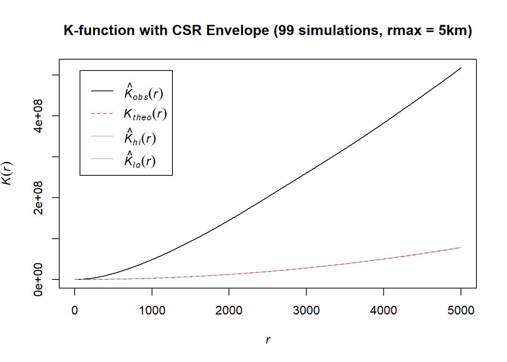
set.seed(1234)
l_envelope <- envelope(fire_ppp, Lest, rmax = 5000, correction = "border", nsim = 99, rank = 1)Generating 99 simulated realisations of CSR ...
1, 2, [7:48 remaining] 3,
[7:14 remaining] 4, [7:00 remaining] 5, [6:49 remaining] 6,
[6:39 remaining] 7, [6:29 remaining] 8, [6:24 remaining] 9,
[6:16 remaining] 10, [6:16 remaining] 11, [6:11 remaining] 12,
[6:05 remaining] 13, [6:00 remaining] 14, [5:55 remaining] 15,
[5:51 remaining] 16, [5:45 remaining] 17, [5:40 remaining] 18,
[5:36 remaining] 19, [5:32 remaining] 20, [5:28 remaining] 21,
[5:26 remaining] 22, [5:21 remaining] 23, [5:17 remaining] 24,
[5:13 remaining] 25, [5:08 remaining] 26, [5:04 remaining] 27,
[4:59 remaining] 28, [4:52 remaining] 29, [4:47 remaining] 30,
[4:43 remaining] 31, [4:41 remaining] 32, [4:38 remaining] 33,
[4:34 remaining] 34, [4:30 remaining] 35, [4:27 remaining] 36,
[4:23 remaining] 37, [4:19 remaining] 38, [4:15 remaining] 39,
[4:11 remaining] 40, [4:07 remaining] 41, [4:04 remaining] 42,
[4:00 remaining] 43, [3:56 remaining] 44, [3:52 remaining] 45,
[3:48 remaining] 46, [3:44 remaining] 47, [3:40 remaining] 48,
[3:35 remaining] 49, [3:31 remaining] 50, [3:27 remaining] 51,
[3:23 remaining] 52, [3:19 remaining] 53, [3:15 remaining] 54,
[3:10 remaining] 55, [3:06 remaining] 56, [3:02 remaining] 57,
[2:58 remaining] 58, [2:54 remaining] 59, [2:50 remaining] 60,
[2:46 remaining] 61, [2:41 remaining] 62, [2:37 remaining] 63,
[2:33 remaining] 64, [2:29 remaining] 65, [2:24 remaining] 66,
[2:20 remaining] 67, [2:16 remaining] 68, [2:12 remaining] 69,
[2:07 remaining] 70, [2:03 remaining] 71, [1:59 remaining] 72,
[1:54 remaining] 73, [1:50 remaining] 74, [1:46 remaining] 75,
[1:42 remaining] 76, [1:37 remaining] 77, [1:33 remaining] 78,
[1:28 remaining] 79, [1:24 remaining] 80, [1:19 remaining] 81,
[1:15 remaining] 82, [1:10 remaining] 83, [1:06 remaining] 84,
[1:02 remaining] 85, [58 sec remaining] 86, [54 sec remaining] 87,
[50 sec remaining] 88, [46 sec remaining] 89, [42 sec remaining] 90,
[37 sec remaining] 91, [33 sec remaining] 92, [29 sec remaining] 93,
[25 sec remaining] 94, [21 sec remaining] 95, [17 sec remaining] 96,
[12 sec remaining] 97, [8 sec remaining] 98, [4 sec remaining]
99.
Done.plot(l_envelope, . - r ~ r, main = "L-function with CSR Envelope (centred, rmax = 5km)")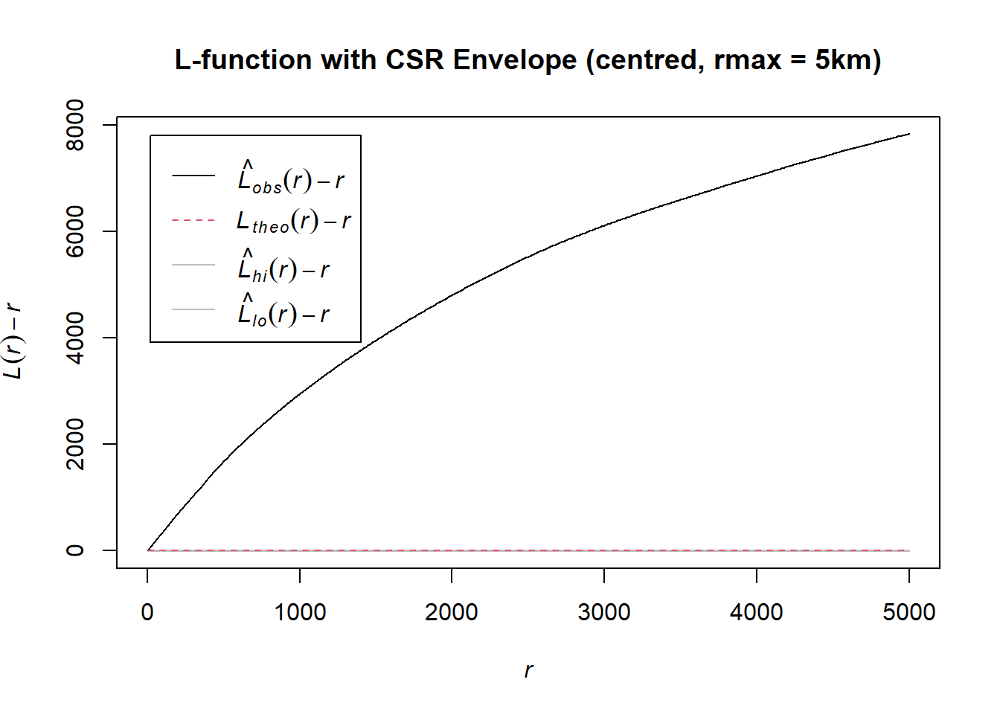
Value-Added Analysis: Spatio-Temporal Interaction Comparison
set.seed(1234)
# Reuse phase split from earlier (fire_split_phase)
k_by_phase <- lapply(fire_split_phase, function(p) Kest(p, rmax = 5000, correction = "border"))
plot(k_by_phase[[1]], main = "K-function by Phase", col = "blue", lty = 1)
plot(k_by_phase[[2]], add = TRUE, col = "orange", lty = 1)
plot(k_by_phase[[3]], add = TRUE, col = "red", lty = 1)
legend("topleft", legend = names(k_by_phase), col = c("blue","orange","red"), lty = 1)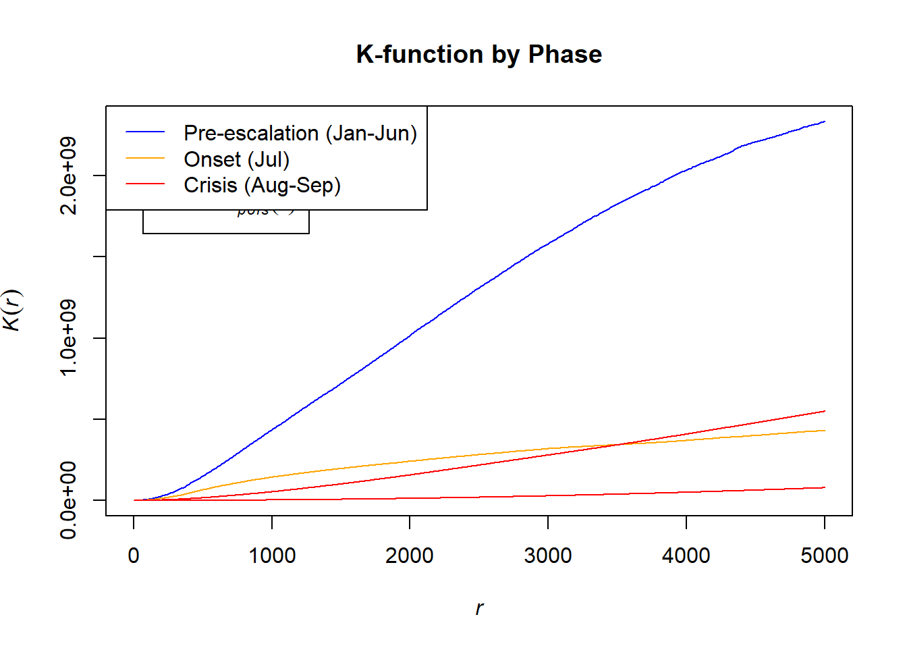
set.seed(1234)
k_envelope_by_phase <- lapply(fire_split_phase, function(p)
envelope(p, Kest, rmax = 5000, correction = "border", nsim = 99, rank = 1))Generating 99 simulated realisations of CSR ...
1, 2, 3, 4, 5, 6, 7, 8, 9, 10, 11, 12, 13, 14, 15, 16, 17, 18, 19, 20,
21, 22, 23, 24, 25, 26, 27, 28, 29, 30, 31, 32, 33, 34, 35, 36, 37, 38, 39, 40,
41, 42, 43, 44, 45, 46, 47, 48, 49, 50, 51, 52, 53, 54, 55, 56, 57, 58, 59, 60,
61, 62, 63, 64, 65, 66, 67, 68, 69, 70, 71, 72, 73, 74, 75, 76, 77, 78, 79, 80,
81, 82, 83, 84, 85, 86, 87, 88, 89, 90, 91, 92, 93, 94, 95, 96, 97, 98,
99.
Done.
Generating 99 simulated realisations of CSR ...
1, 2, 3, 4, 5, 6, 7, 8, 9, 10, 11, 12, 13, 14, 15, 16, 17, 18, 19, 20,
21, 22, 23, 24, 25, 26, 27, 28, 29, 30, 31, 32, 33, 34, 35, 36, 37, 38, 39, 40,
41, 42, 43, 44, 45, 46, 47, 48, 49, 50, 51, 52, 53, 54, 55, 56, 57, 58, 59, 60,
61, 62, 63, 64, 65, 66, 67, 68, 69, 70, 71, 72, 73, 74, 75, 76, 77, 78, 79, 80,
81, 82, 83, 84, 85, 86, 87, 88, 89, 90, 91, 92, 93, 94, 95, 96, 97, 98,
99.
Done.
Generating 99 simulated realisations of CSR ...
1, 2, [6:20 remaining] 3,
[6:19 remaining] 4, [6:21 remaining] 5, [6:16 remaining] 6,
[6:18 remaining] 7, [6:21 remaining] 8, [6:21 remaining] 9,
[6:27 remaining] 10, [6:20 remaining] 11, [6:15 remaining] 12,
[6:13 remaining] 13, [6:07 remaining] 14, [5:58 remaining] 15,
[5:45 remaining] 16, [5:34 remaining] 17, [5:24 remaining] 18,
[5:14 remaining] 19, [5:08 remaining] 20, [5:05 remaining] 21,
[5:02 remaining] 22, [4:58 remaining] 23, [4:57 remaining] 24,
[4:54 remaining] 25, [4:51 remaining] 26, [4:46 remaining] 27,
[4:43 remaining] 28, [4:39 remaining] 29, [4:35 remaining] 30,
[4:31 remaining] 31, [4:26 remaining] 32, [4:23 remaining] 33,
[4:19 remaining] 34, [4:15 remaining] 35, [4:12 remaining] 36,
[4:08 remaining] 37, [4:04 remaining] 38, [4:00 remaining] 39,
[3:56 remaining] 40, [3:52 remaining] 41, [3:48 remaining] 42,
[3:44 remaining] 43, [3:40 remaining] 44, [3:37 remaining] 45,
[3:33 remaining] 46, [3:29 remaining] 47, [3:25 remaining] 48,
[3:21 remaining] 49, [3:17 remaining] 50, [3:13 remaining] 51,
[3:09 remaining] 52, [3:05 remaining] 53, [3:01 remaining] 54,
[2:57 remaining] 55, [2:53 remaining] 56, [2:49 remaining] 57,
[2:45 remaining] 58, [2:42 remaining] 59, [2:38 remaining] 60,
[2:34 remaining] 61, [2:30 remaining] 62, [2:26 remaining] 63,
[2:22 remaining] 64, [2:18 remaining] 65, [2:14 remaining] 66,
[2:10 remaining] 67, [2:06 remaining] 68, [2:02 remaining] 69,
[1:58 remaining] 70, [1:54 remaining] 71, [1:51 remaining] 72,
[1:47 remaining] 73, [1:43 remaining] 74, [1:39 remaining] 75,
[1:35 remaining] 76, [1:31 remaining] 77, [1:27 remaining] 78,
[1:23 remaining] 79, [1:19 remaining] 80, [1:15 remaining] 81,
[1:11 remaining] 82, [1:07 remaining] 83, [1:03 remaining] 84,
[59 sec remaining] 85, [55 sec remaining] 86, [51 sec remaining] 87,
[47 sec remaining] 88, [43 sec remaining] 89, [40 sec remaining] 90,
[36 sec remaining] 91, [32 sec remaining] 92, [28 sec remaining] 93,
[24 sec remaining] 94, [20 sec remaining] 95, [16 sec remaining] 96,
[12 sec remaining] 97, [8 sec remaining] 98, [4 sec remaining]
99.
Done.par(mfrow = c(1,3), mar = c(4,4,2,1))
for (ph in names(k_envelope_by_phase)) {
plot(k_envelope_by_phase[[ph]], main = ph)
}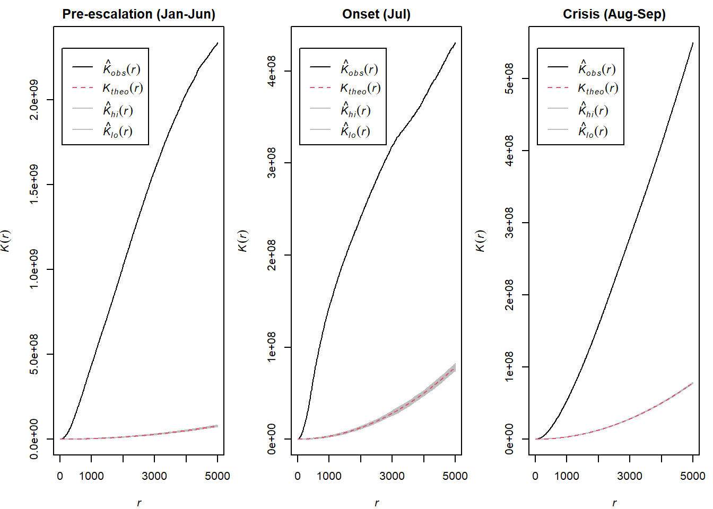
par(mfrow = c(1,1))Integrated Findings and Discussion
Geovisualisation and Geocommunication
Final KDE Maps (tmap)
Converts the crisis-phase KDE output to a raster and plots it with tmap for a cleaner final map than the base-R version.
kde_crisis_rast <- rast(kde_phase[["Crisis (Aug-Sep)"]])
crs(kde_crisis_rast) <- "EPSG:32749"
tm_shape(kde_crisis_rast) +
tm_raster(style = "cont", palette = "viridis", title = "Fire Density") +
tm_shape(ketapang_boundary) +
tm_borders(col = "white", lwd = 1) +
tm_layout(main.title = "Fire Density - Crisis Phase (Aug-Sep 2026)",
legend.outside = TRUE)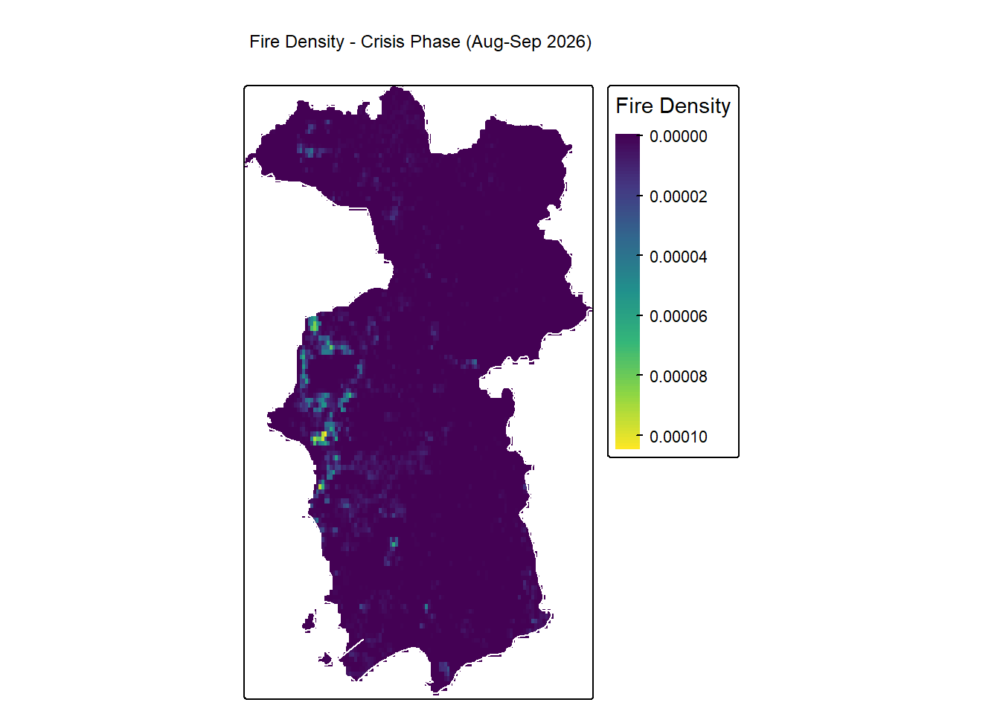
G, F, K, L Function Plots (Final)
Re-renders the second-order function plots using ggplot2 for consistent styling in the final report.
g_df <- as.data.frame(g_envelope)
ggplot(g_df, aes(x = r)) +
geom_ribbon(aes(ymin = lo, ymax = hi), fill = "grey80") +
geom_line(aes(y = obs), color = "black") +
geom_line(aes(y = theo), color = "red", linetype = "dashed") +
labs(title = "G-function", x = "r", y = "G(r)") +
theme_minimal()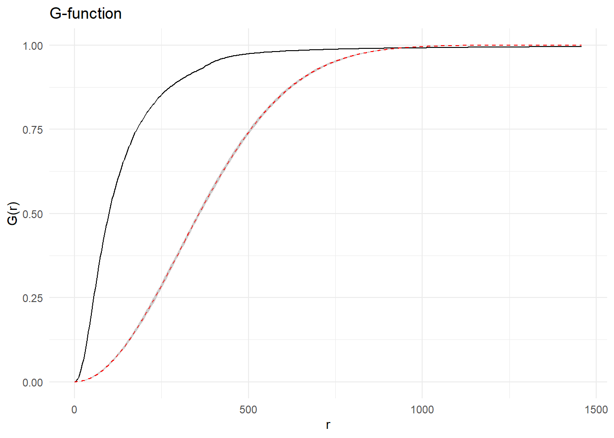
f_df <- as.data.frame(f_envelope)
ggplot(f_df, aes(x = r)) +
geom_ribbon(aes(ymin = lo, ymax = hi), fill = "grey80") +
geom_line(aes(y = obs), color = "black") +
geom_line(aes(y = theo), color = "red", linetype = "dashed") +
labs(title = "F-function", x = "r", y = "F(r)") +
theme_minimal()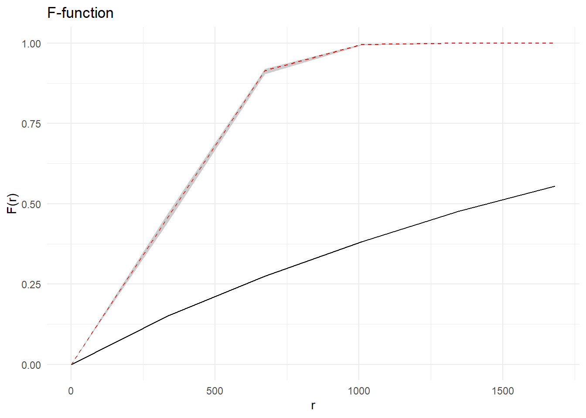
k_df <- as.data.frame(k_envelope)
ggplot(k_df, aes(x = r)) +
geom_ribbon(aes(ymin = lo, ymax = hi), fill = "grey80") +
geom_line(aes(y = obs), color = "black") +
geom_line(aes(y = theo), color = "red", linetype = "dashed") +
labs(title = "K-function", x = "r", y = "K(r)") +
theme_minimal()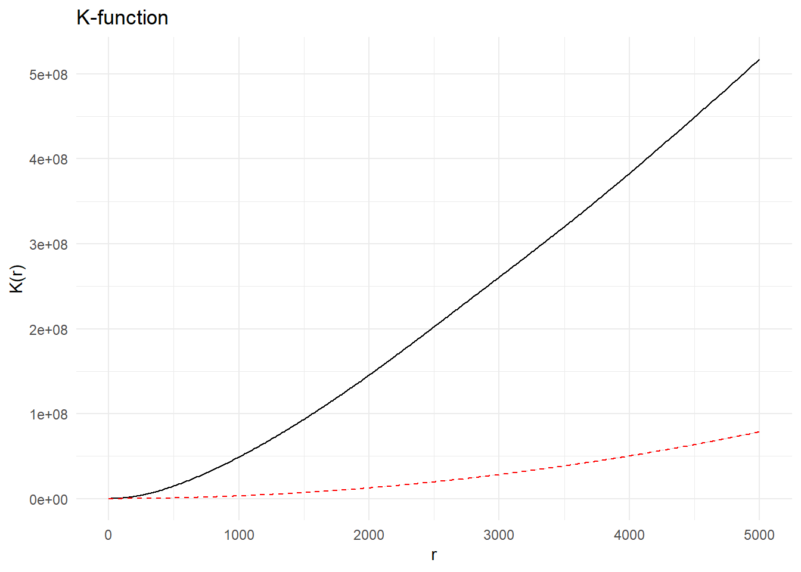
l_df <- as.data.frame(l_envelope)
ggplot(l_df, aes(x = r)) +
geom_ribbon(aes(ymin = lo - r, ymax = hi - r), fill = "grey80") +
geom_line(aes(y = obs - r), color = "black") +
geom_line(aes(y = theo - r), color = "red", linetype = "dashed") +
labs(title = "L-function (centred)", x = "r", y = "L(r) - r") +
theme_minimal()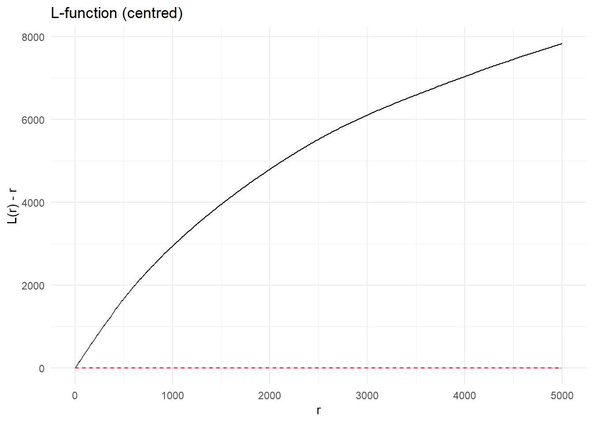